Implemented inventory
Application and API
33 files
app/__init__.py, app/__main__.py, app/__pycache__/__init__.cpython-311.pyc, tests/__pycache__/conftest.cpython-311-pytest-8.3.4.pyc
Local runtime and containers
5 files
Dockerfile, docker-compose.yml, tools/build_local_runtime.py, tools/local-cluster.sh
CI/CD and release gates
5 files
.github/workflows/cd.yml, .github/workflows/ci.yml, .github/workflows/promote.yml, tools/verify_release.py
Terraform infrastructure
11 files
infra/terraform/backend.hcl.example, infra/terraform/bootstrap/main.tf, infra/terraform/environments/dev.backend.hcl
Kubernetes and GitOps
49 files
deploy/gitops/apps/taskflow/base/analysis-template.yaml, deploy/gitops/apps/taskflow/base/configmap.yaml, deploy/gitops/apps/taskflow/base/hpa.yaml
Platform controls
35 files
platform/argo-rollouts-values.yaml, platform/argocd/applicationset.yaml, platform/argocd/argocd-values.yaml
Runbooks and recovery
9 files
runbooks/dr-restore.md, runbooks/incident-response.md, runbooks/pipeline-failure.md, platform/backup/README.md
Documentation and manual
73 files
docs/architecture.md, docs/architecture.mmd, docs/branching.md, README.md
All screenshots

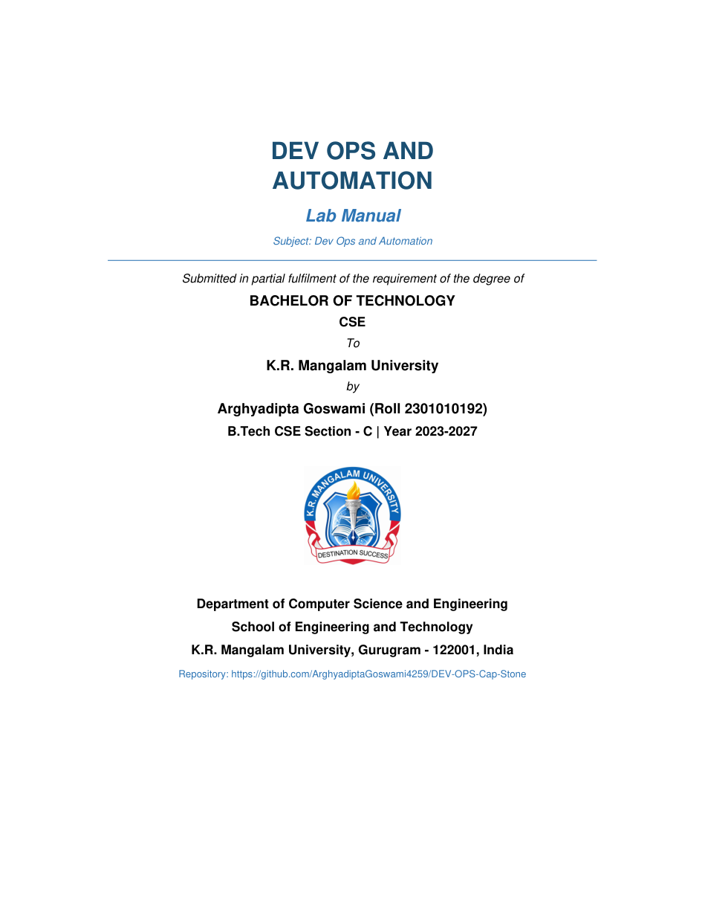

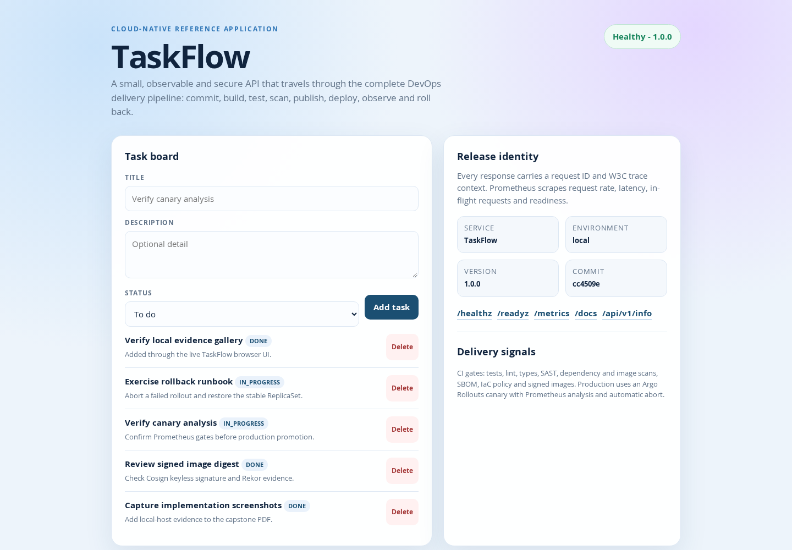

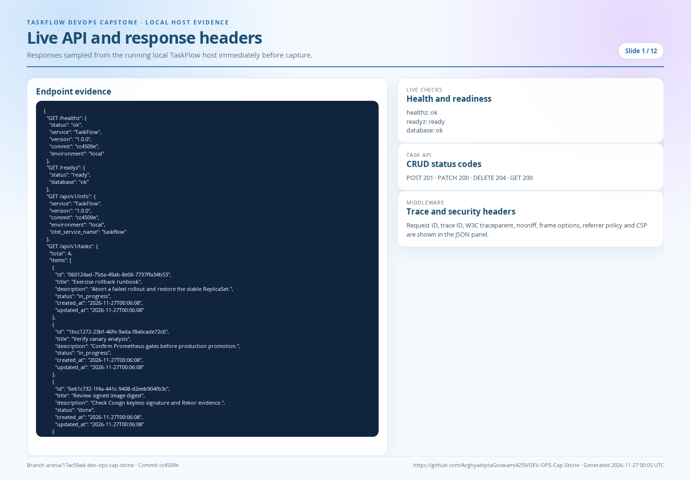

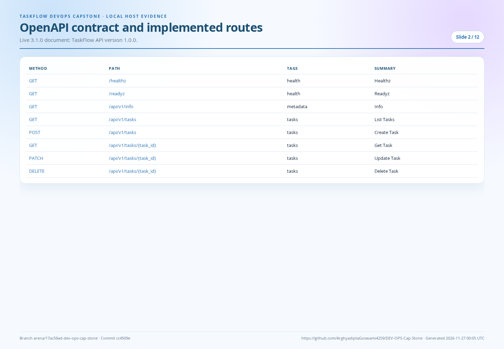

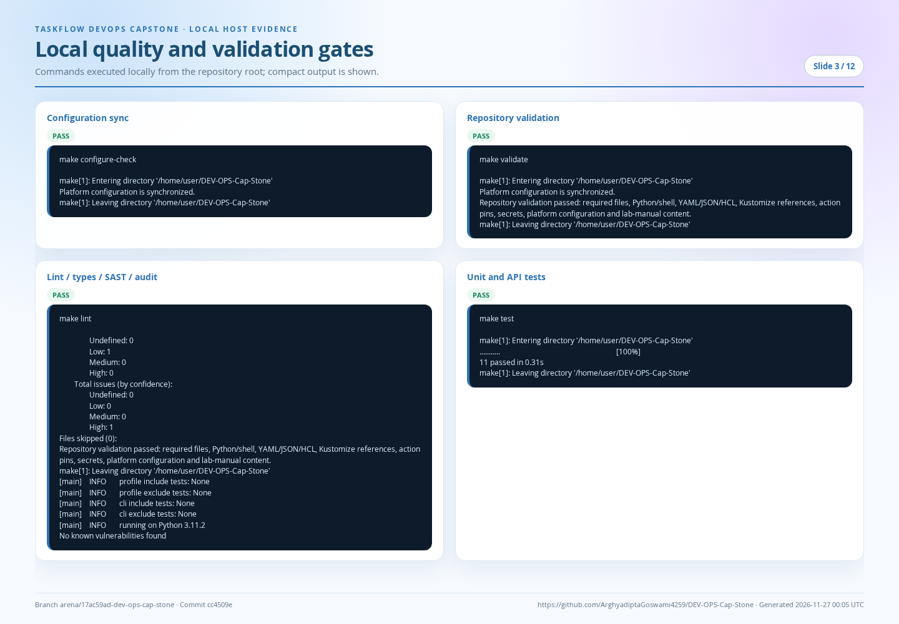

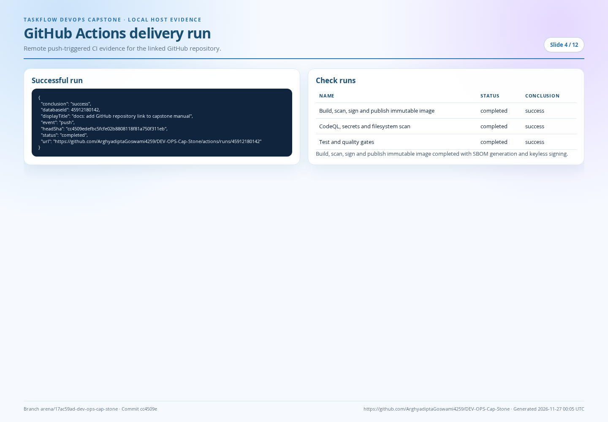

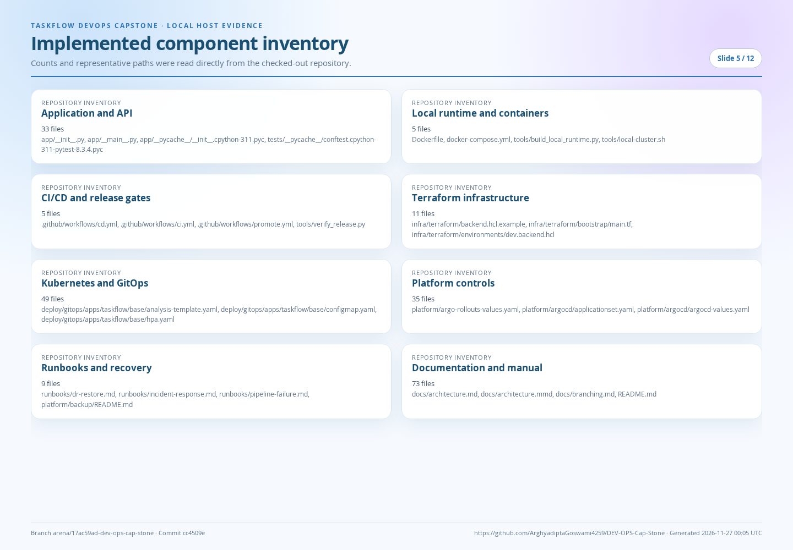

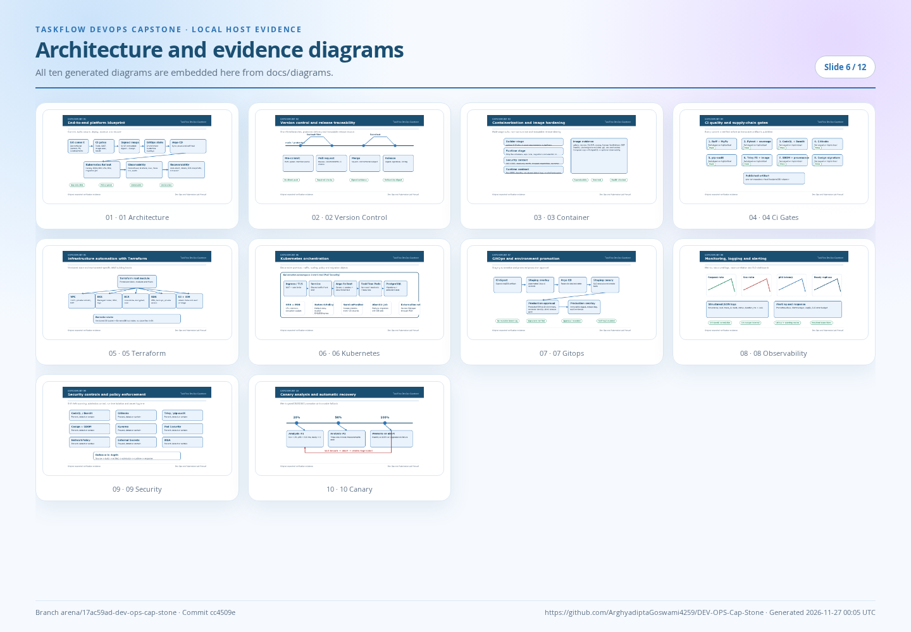

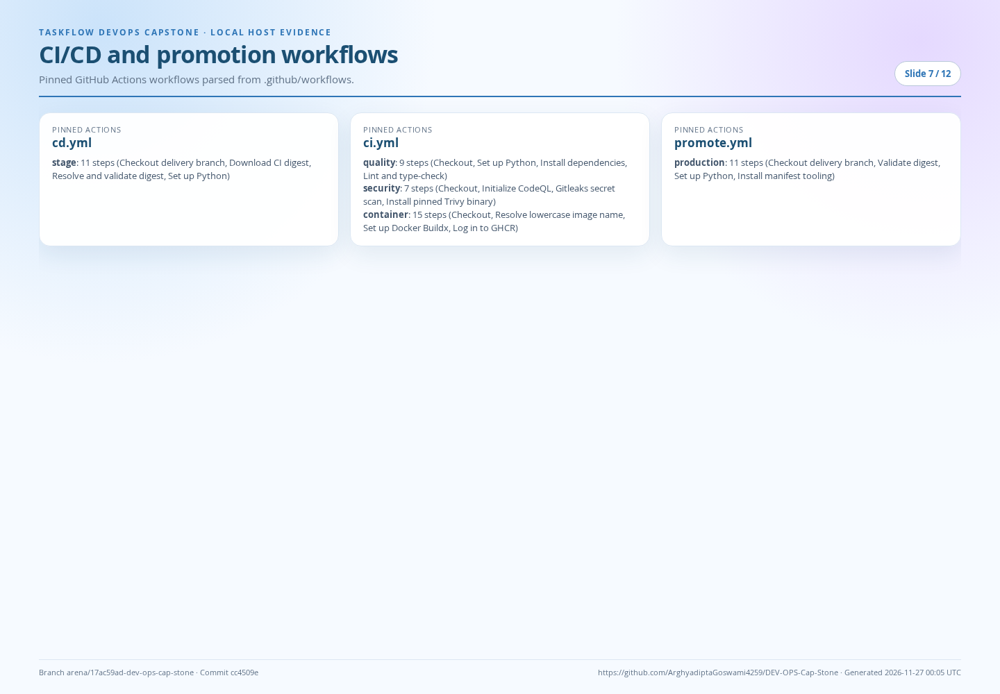

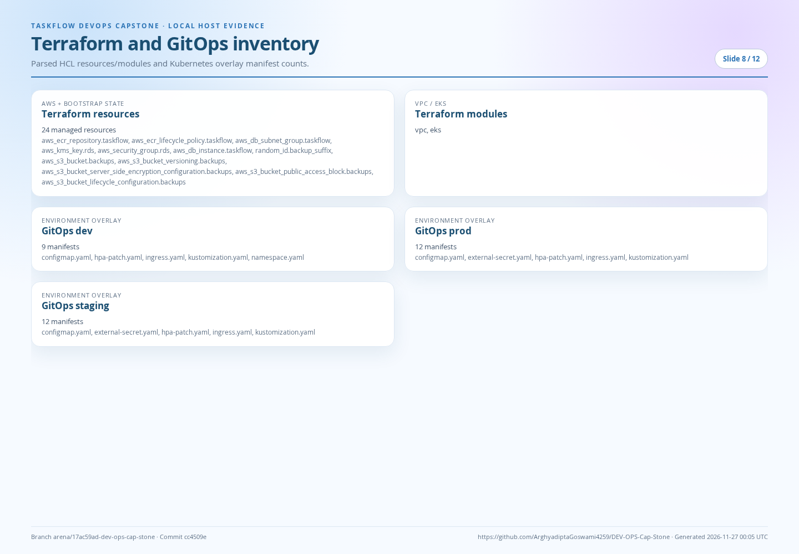

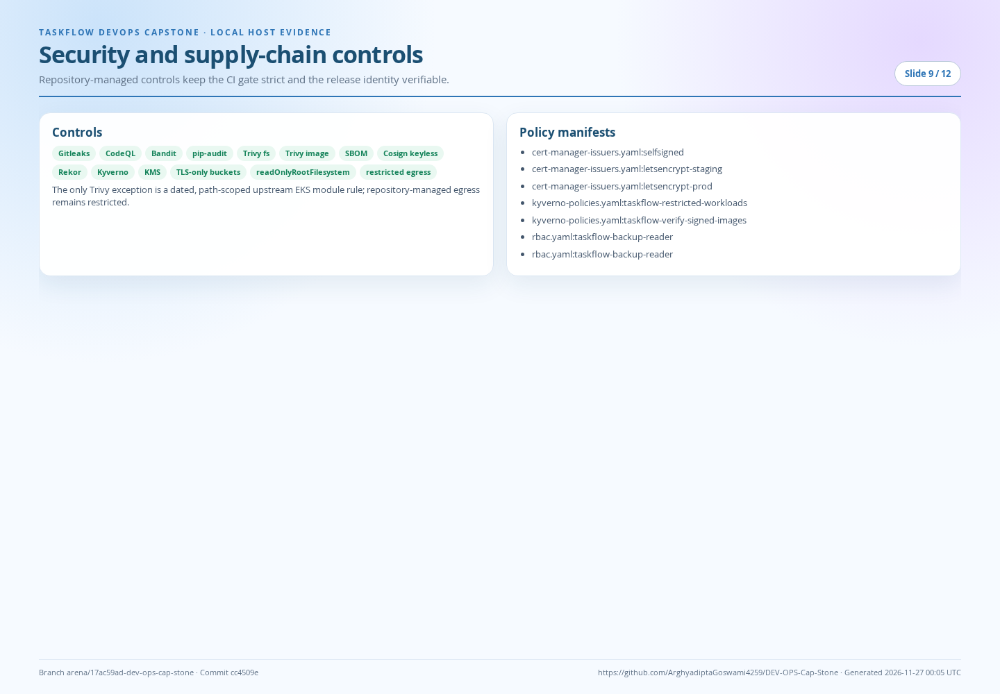

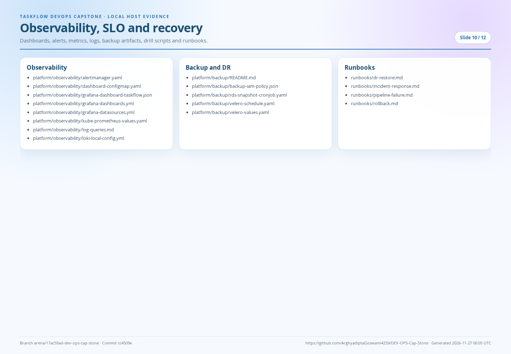

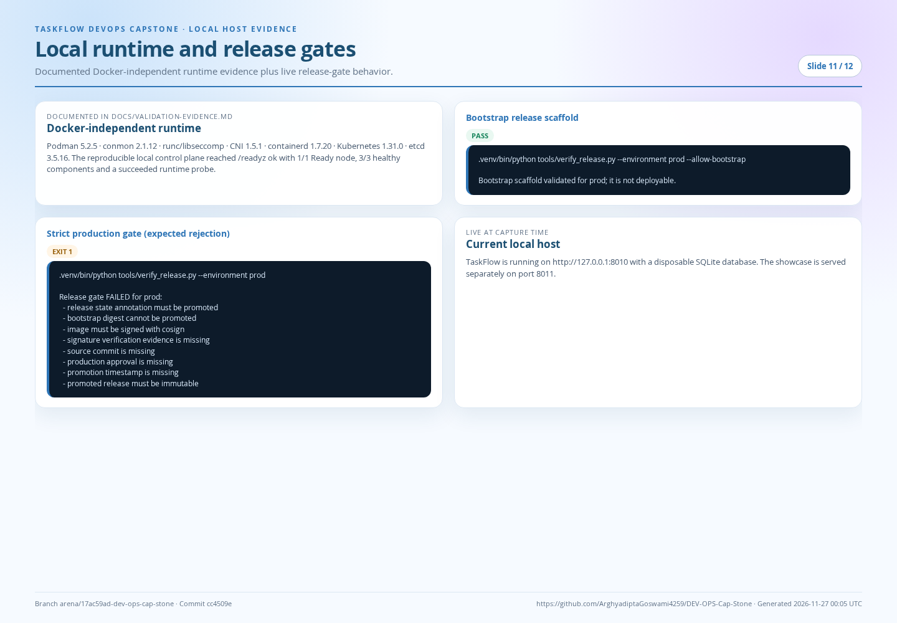

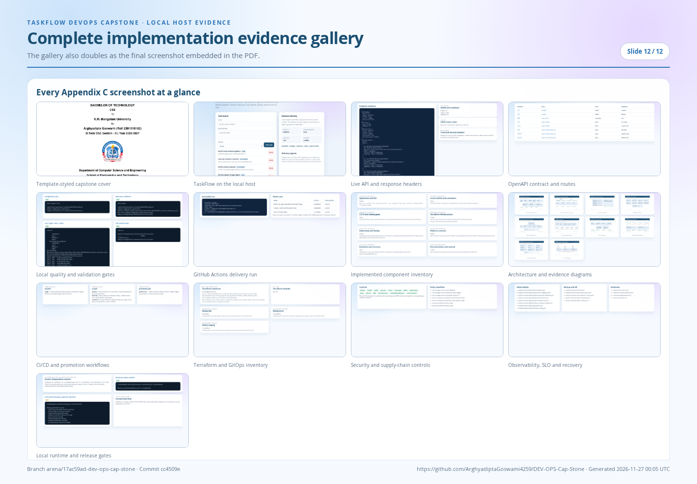
Reproduce
make evidence captures the screenshots and regenerates the PDF/DOCX/MD.
make evidence-showcase serves this page on 0.0.0.0:8011.
The live app uses 0.0.0.0:8010 in this workspace.